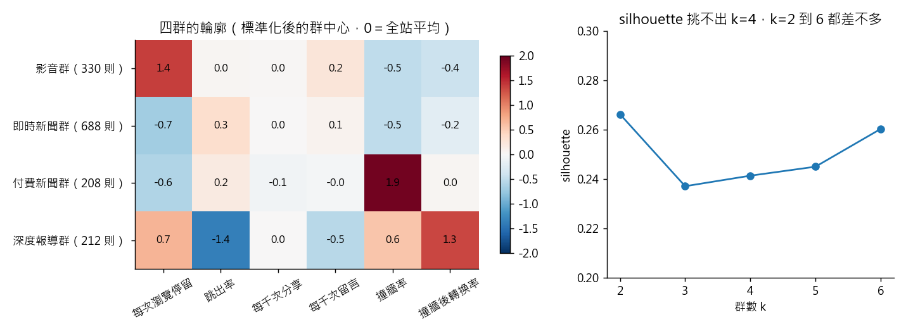

練習 14 - 讀者眼中有幾種內容
在本單元中，會介紹第 14 題背後的商業問題、它練的是哪一種資料分析，以及從資料到結論的完整做法、程式與圖表。建議先回 Hub - 資料分析練習案例庫 自己試著做一次，再來對照這一頁。
有人會這樣問你
我們每個月發一千多則，後台只分新聞、深度、影音、Podcast 四種。但那是我們自己編的分類，讀者的行為真的也分成四種嗎？其中哪一群是真的在幫我們賣訂閱的？
用到的資料：content_monthly_flat（L1 的 content_monthly_2024_10.csv）
對應單元：沒有標籤的時候怎麼分群
這一題在商業上要回答什麼
編輯部的內容分類是生產端的語言，讀者的行為分群是消費端的語言。找出「不紅但會賣訂閱」的那一群，才知道哪一類內容應該用訂閱、而不是流量來評估。
這一題練的是哪一種資料分析
這是非監督式學習的分群（clustering）。用比率而不是量體當特徵、先標準化、比較不同的群數，最後用一句話替每一群命名。群數是分析者的選擇，不是資料替你決定的答案。
1,438 則分成 4 群，分法大約有 10 的 864 次方種，KMeans 不可能全部試過，只能從一個起點往下走到附近的低點。只起跑一次、換 20 個亂數種子，沒有一次跟最佳解完全一樣，一致度從 0.43 到接近 1，這就是要設 n_init 多跑幾次的原因。見 搜尋空間與河內塔
內容型態本身有 1.58 bits 的不確定性，知道一則內容落在哪一群之後剩 0.63 bits，分群帶走了 60%。四群裡最純的一群只剩 0.27 bits，最混的一群還有 1.28 bits，交叉表要先看那一群。見 Entropy 與 Shannon 資訊理論
一步一步怎麼做
- K-means 分群。
- 不要拿 pv、uv、sessions 這種量體欄位直接分，改用每一則自己的比率當特徵：每次瀏覽的平均停留秒數（dwell_sec_total / pv）、跳出率（bounce_sessions / sessions）、每千次瀏覽的分享數與留言數、撞牆率（paywall_hit_cnt / sessions）、撞牆後的轉換率（conversion_cnt / paywall_hit_cnt）。
- 六個特徵先做標準化，再跑 k = 2 到 6（KMeans 的 n_init=10、random_state=42），把每個 k 的 silhouette 都印出來，再決定要幾群。
工具怎麼選 用 Python 的理由：標準化、KMeans、silhouette 在 scikit-learn 裡各一行就有，你的力氣可以全花在挑特徵跟解釋分群上。
看完整程式（Python）
from math import lgamma, log
from _kmg import *
from sklearn.cluster import KMeans
from sklearn.metrics import adjusted_rand_score, silhouette_score
from sklearn.preprocessing import StandardScaler
f = dedupe(flat()).reset_index(drop=True)
F = pd.DataFrame({
"dwell_per_pv": f["dwell_sec_total"] / f["pv"],
"bounce": f["bounce_sessions"] / f["sessions"],
"share_k": f["share_cnt"] / f["pv"] * 1000,
"comment_k": f["comment_cnt"] / f["pv"] * 1000,
"hit_rate": f["paywall_hit_cnt"] / f["sessions"],
"conv_hit": (f["conversion_cnt"] / f["paywall_hit_cnt"]).fillna(0),
}).replace([np.inf, -np.inf], 0).fillna(0)
Z = StandardScaler().fit_transform(F)
sil = {}
for k in range(2, 7):
km = KMeans(n_clusters=k, n_init=10, random_state=42).fit(Z)
sil[k] = float(silhouette_score(Z, km.labels_))
print("各 k 的 silhouette：" + "、".join("k=%d %.3f" % kv for kv in sil.items()))
print("silhouette（k=4）", sil[4])
print("silhouette 最高的 k", max(sil, key=sil.get))
print("silhouette 最高值", max(sil.values()))
print("k=2 到 6 的 silhouette 最低值", min(sil.values()))
km = KMeans(n_clusters=4, n_init=10, random_state=42).fit(Z)
f["cl"] = km.labels_
prof = F.assign(pv=f["pv"], cl=f["cl"]).groupby("cl").agg(
dwell=("dwell_per_pv", "mean"), hit=("hit_rate", "mean"), bounce=("bounce", "mean"),
conv=("conv_hit", "mean"), pvmed=("pv", "median"), n=("pv", "size"))
paywalled = f.groupby("cl")["is_paywalled"].mean()
av, nw, hi, deep = prof["dwell"].idxmax(), prof["dwell"].idxmin(), prof["hit"].idxmax(), prof["pvmed"].idxmin()
print("四種性格各落在不同群", len({av, nw, hi, deep}))
print("影音群每次瀏覽停留（秒）", float(prof.loc[av, "dwell"]))
print("影音群付費牆比例", float(paywalled[av]))
print("即時新聞群每次瀏覽停留（秒）", float(prof.loc[nw, "dwell"]))
print("付費新聞群撞牆率", float(prof.loc[hi, "hit"]))
print("影音群撞牆率", float(prof.loc[av, "hit"]))
print("即時新聞群撞牆率", float(prof.loc[nw, "hit"]))
print("深度群撞牆率", float(prof.loc[deep, "hit"]))
print("深度群瀏覽量中位數", float(prof.loc[deep, "pvmed"]))
others = prof.drop(deep)
print("其他三群瀏覽量中位數 最低", float(others["pvmed"].min()))
print("其他三群瀏覽量中位數 最高", float(others["pvmed"].max()))
print("深度群跳出率", float(prof.loc[deep, "bounce"]))
print("深度群撞牆轉換率", float(prof.loc[deep, "conv"]))
print("其他三群撞牆轉換率 最低", float(others["conv"].min()))
print("其他三群撞牆轉換率 最高", float(others["conv"].max()))
print("深度群跳出率是四群最低", bool(prof["bounce"].idxmin() == deep))
print("深度群撞牆轉換率是四群最高", bool(prof["conv"].idxmax() == deep))
# 課堂概念：搜尋空間。1,438 則分成 4 群的分法約 4^n / 4!；只起跑一次會停在哪裡
n = len(f)
log10_ways = (n * log(4) - lgamma(5)) / log(10)
print("分成 4 群的分法（10 的幾次方）", int(log10_ways))
runs = [KMeans(n_clusters=4, n_init=1, random_state=s).fit(Z) for s in range(20)]
ari = [adjusted_rand_score(km.labels_, m.labels_) for m in runs]
inertia = [m.inertia_ for m in runs]
print("只起跑一次 20 個種子 inertia 最低", float(min(inertia)))
print("只起跑一次 20 個種子 inertia 最高", float(max(inertia)))
print("跟最佳解的一致度 ARI 最低", float(min(ari)))
print("跟最佳解分群完全相同的次數", int(sum(a == 1.0 for a in ari)))
print("只起跑一次時，20 個種子跟最佳解的 ARI 最高是 %.4f" % max(ari))
# 課堂概念：entropy。知道群別之後，內容型態還剩多少不確定性
H = entropy_bits(f["content_type"].value_counts())
per = {int(c): entropy_bits(g.value_counts()) for c, g in f.groupby("cl")["content_type"]}
Hc = sum(float((f["cl"] == c).mean()) * h for c, h in per.items())
print("內容型態 entropy（bits）", H)
print("知道群別後剩的 entropy（bits）", Hc)
print("分群帶走的比例", (H - Hc) / H)
print("最純那一群的 entropy（bits）", min(per.values()))
print("最混那一群的 entropy（bits）", max(per.values()))
Fr = F.assign(dwell_total=f["dwell_sec_total"], conv_raw=f["conversion_cnt"])
lab_raw = KMeans(n_clusters=4, n_init=10, random_state=42).fit_predict(Fr)
x = f["dwell_sec_total"]
eta2 = 1 - ((x - x.groupby(lab_raw).transform("mean")) ** 2).sum() / ((x - x.mean()) ** 2).sum()
NAME = {av: "影音群", nw: "即時新聞群", hi: "付費新聞群", deep: "深度報導群"}
ctab = pd.crosstab(f["cl"].map(NAME), f["content_type"])
LAB = {"dwell_per_pv": "每次瀏覽停留", "bounce": "跳出率", "share_k": "每千次分享", "comment_k": "每千次留言",
"hit_rate": "撞牆率", "conv_hit": "撞牆後轉換率"}
centers = pd.DataFrame(km.cluster_centers_, columns=[LAB[c] for c in F.columns]).rename(index=NAME)
centers = centers.loc"影音群", "即時新聞群", "付費新聞群", "深度報導群"
fig, ax = plt.subplots(1, 2, figsize=(11, 4), gridspec_kw={"width_ratios": [3, 2]})
im = ax[0].imshow(centers.values, cmap="RdBu_r", vmin=-2, vmax=2)
for i in range(centers.shape[0]):
for j in range(centers.shape[1]):
ax[0].text(j, i, "%.1f" % centers.values[i, j], ha="center", va="center", fontsize=9)
ax[0].set_xticks(range(6), centers.columns, rotation=30)
ax[0].set_yticks(range(4), ["%s（%d 則）" % (nm, (f["cl"].map(NAME) == nm).sum()) for nm in centers.index])
ax[0].set_title("四群的輪廓（標準化後的群中心，0＝全站平均）")
fig.colorbar(im, ax=ax[0], shrink=0.8)
ax[1].plot(list(sil), list(sil.values()), marker="o")
ax[1].set_xlabel("群數 k")
ax[1].set_ylabel("silhouette")
ax[1].set_ylim(0.2, 0.3)
ax[1].set_title("silhouette 挑不出 k=4，k=2 到 6 都差不多")
save_fig(fig, "ex14_clusters.png")
程式開頭的 from _kmg import * 載入共用的讀檔、去重、換幣別與畫圖函式，內容放在 練習 01 - 月會上的則數對不對。
結果會看到什麼
k=4 會分出四群，而且四群都講得出一句話：一群平均每次瀏覽停留 135 秒、完全不在付費牆後（影音與 Podcast）；一群只停留 23 秒（即時新聞）；一群撞牆率 0.35（付費牆裡的新聞），影音群與即時新聞群都只有 0.02；最後一群瀏覽量中位數只有 229（其他三群在 448 到 493），撞牆率 0.16，跳出率卻最低（0.46）、撞牆後轉換率最高（0.345，其他三群 0.16 到 0.21）——那就是深度報導群，它不紅，但它是賣訂閱的那一群，這就是回答總編那句問話的答案。一併要注意 k=4 的 silhouette 只有 0.24，最高的反而是 k=2（0.27），k=2 到 6 全部擠在 0.24 到 0.27 之間：選四群是因為四群都講得出一句話，不是指標替你挑的。這四群是好用的標籤，不是資料裡天然存在的界線。
- 各 k 的 silhouette：k=2 0.266、k=3 0.237、k=4 0.241、k=5 0.245、k=6 0.260
- 只起跑一次時，20 個種子跟最佳解的 ARI 最高是 0.9978
圖怎麼讀

左圖是四群的群中心，數字是標準化後離全站平均幾個標準差，紅色高於平均、藍色低於平均。右圖是 k=2 到 6 的 silhouette，最高的是 k=2，不是 k=4。繼續練習
上一題 練習 13 - 停投版位清單、下一題 練習 15 - 會賣訂閱的稿子，或回到 Hub - 資料分析練習案例庫 挑別的題目。
學生版｜更新於 2026-09-13 11:59